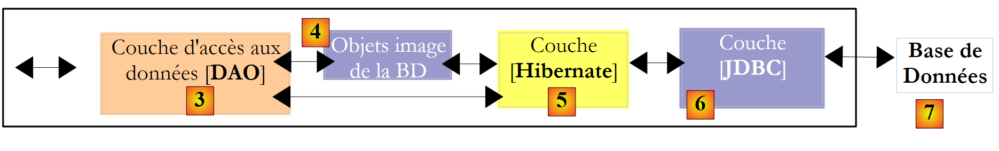
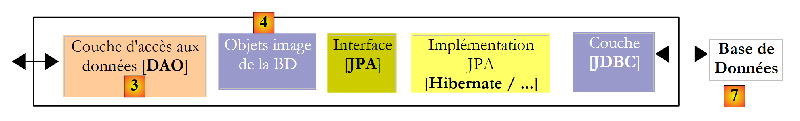

2. Arquitectura por capas de una aplicación Java
Una aplicación Java suele dividirse en capas, cada una de las cuales tiene una función bien definida. Consideremos una arquitectura habitual, la de tres capas:
 |
- La capa [1], denominada aquí [ui] (interfaz de usuario), es la capa que interactúa con el usuario a través de una interfaz gráfica Swing, una interfaz de consola o una interfaz web. Su función es proporcionar los datos procedentes del usuario a la capa [2] o bien presentar al usuario los datos proporcionados por la capa [2].
- La capa [2], denominada aquí [metier], es la capa que aplica las reglas denominadas «de negocio», c.a.d. La lógica específica de la aplicación, sin preocuparse por el origen de los datos que se le proporcionan ni por el destino de los resultados que genera.
- La capa [3], denominada aquí [DAO] (Data Access Object), es la capa que proporciona a la capa [2] datos pregrabados (archivos, bases de datos, ...) y que almacena algunos de los resultados proporcionados por la capa [2].
Existen diferentes posibilidades para implementar la capa [DAO]. Veamos algunas de ellas:
 |
La capa [JDBC] anterior es la capa estándar utilizada en Java para acceder a bases de datos. Aísla la capa [DAO] de la SGBD, que gestiona la base de datos. En teoría, se puede cambiar de SGBD sin modificar el código de la capa [DAO]. A pesar de esta ventaja, la capa API presenta algunos inconvenientes:
- todas las operaciones en SGBD pueden provocar la excepción controlada (checked) SQLException. Esto obliga al código que realiza la llamada (en este caso, la capa [DAO]) a rodearlas con try/catch, lo que hace que el código resulte bastante pesado.
- La capa [DAO] no es totalmente independiente de la SGBD. Estas últimas cuentan, por ejemplo, con métodos propios para la generación automática de valores de claves primarias que la capa [DAO] no puede ignorar. Así, al insertar un registro:
- con Oracle, la capa [DAO] debe obtener primero un valor para la clave primaria del registro y, a continuación, insertarlo.
- con SQL Server, la capa [DAO] inserta el registro, al que la capa SGBD le asigna automáticamente un valor de clave primaria, valor que se devuelve a la capa [DAO].
Estas diferencias pueden eliminarse mediante el uso de procedimientos almacenados. En el ejemplo anterior, la capa [DAO] llamará a un procedimiento almacenado en Oracle o en SQL Server que tendrá en cuenta las particularidades de SGBD. Estas particularidades quedarán ocultas en la capa [DAO]. No obstante, aunque cambiar el SGBD no implique reescribir la capa [DAO], sí que implica reescribir los procedimientos almacenados. Esto puede no considerarse un obstáculo insuperable.
Se han realizado múltiples esfuerzos para aislar la capa [DAO] de los aspectos propietarios de SGBD. Una solución que ha tenido un gran éxito en este ámbito en los últimos años es la de Hibernate:
 |
La capa [Hibernate] se sitúa entre la capa [DAO], escrita por el desarrollador, y la capa [JDBC]. Hibernate es un ORM (mapeador objeto-relacional), una herramienta que sirve de puente entre el mundo relacional de las bases de datos y el de los objetos manipulados por Java. El desarrollador de la capa [DAO] ya no ve la capa [JDBC] ni las tablas de la base de datos cuyo contenido desea explotar. Solo ve la imagen objeto de la base de datos, imagen objeto proporcionada por la capa [Hibernate]. El puente entre las tablas de la base de datos y los objetos manipulados por la capa [DAO] se establece principalmente de dos maneras:
- mediante archivos de configuración de tipo XML
- mediante anotaciones Java en el código, técnica disponible únicamente a partir de la versión 1.5 de JDK
La capa [Hibernate] es una capa de abstracción que pretende ser lo más transparente posible. El objetivo ideal es que el desarrollador de la capa [DAO] pueda ignorar por completo que está trabajando con una base de datos. Esto es posible si no es él quien escribe la configuración que sirve de puente entre el mundo relacional y el mundo de objetos. La configuración de este puente es bastante delicada y requiere cierta práctica.
La capa de objetos [4], que es un reflejo de la BD, se denomina «contexto de persistencia». Una capa [DAO] basada en Hibernate realiza acciones de persistencia (CRUD: crear, leer, actualizar, eliminar) sobre los objetos del contexto de persistencia, acciones que Hibernate traduce en órdenes SQL ejecutadas por la capa JDBC. Para las acciones de consulta a la base de datos (el SQL Select), Hibernate proporciona al desarrollador un lenguaje HQL (Hibernate Query Language) para consultar el contexto de persistencia [4] y no la propia BD.
Hibernate es muy popular, pero resulta complejo de dominar. La curva de aprendizaje, que a menudo se presenta como fácil, es en realidad bastante pronunciada. En cuanto se tiene una base de datos con tablas que presentan relaciones uno a varios o varios a varios, la configuración del puente relacional-objeto no está al alcance de cualquier principiante. Los errores de configuración pueden dar lugar a aplicaciones con un rendimiento deficiente.
Ante el éxito de los productos ORM, Sun, el creador de Java, decidió estandarizar una capa ORM mediante una especificación denominada JPA (Java Persistence API), que apareció al mismo tiempo que Java 5. La especificación JPA ha sido implementada por diversos productos: Hibernate, Toplink, EclipseLink, OpenJpa, etc. Con JPA, la arquitectura anterior pasa a ser la siguiente:
 |
La capa [DAO] ahora interactúa con la especificación JPA, un conjunto de interfaces. El desarrollador ha ganado en estandarización. Antes, si modificaba su capa ORM, también tenía que modificar su capa [DAO], que se había escrito para interactuar con un ORM específico. Ahora, escribirá una capa [DAO] que se comunicará con una capa JPA. Independientemente del producto que la implemente, la interfaz de la capa JPA que se presenta a la capa [DAO] sigue siendo la misma.
En este documento, utilizaremos una capa [DAO] basada en una capa JPA/Hibernate o JPA/EclipseLink. Además, utilizaremos el framework Spring 2.8 para vincular estas capas entre sí.
 |
La gran ventaja de Spring es que permite vincular las capas mediante la configuración y no en el código. Así, si la implementación JPA / Hibernate debe sustituirse por una implementación de Hibernate sin JPA, porque, por ejemplo, la aplicación se ejecuta en un entorno JDK 1.4 que no es compatible con JPA, este cambio en la implementación de la capa [DAO] no afecta al código de la capa [métier]. Solo hay que modificar el archivo de configuración de Spring que vincula las capas entre sí.
Con Java EE 5, existe otra solución: implementar las capas [metier] y [DAO] con EJB3 (Enterprise Java Bean versión 3):
 |
Veremos que esta solución no difiere mucho de la que utiliza Spring. El entorno Java EE5 está disponible en los denominados servidores de aplicaciones, como Sun Application Server 9.x (Glassfish), Jboss Application Server, Oracle Container for Java (OC4J), etc. Un servidor de aplicaciones es, en esencia, un servidor de aplicaciones web. También existen entornos EE 5 denominados «autónomos», c.a.d, que pueden utilizarse fuera de un servidor de aplicaciones. Es el caso de JBoss, EJB3 o OpenEJB.
En un entorno EE5, las capas se implementan mediante objetos denominados EJB (Enterprise Java Bean). En versiones anteriores de EE, los EJB (EJB y 2.x) tenían fama de ser difíciles de implementar y de probar, y en ocasiones ofrecían un rendimiento deficiente. Se distingue entre los EJB2.x «entity» y los EJB2.x «session». En resumen, un EJB2.x «entity» es la representación de una fila de una tabla de base de datos y un EJB2.x «session» es un objeto utilizado para implementar las capas [metier], [DAO] de una arquitectura multicapa. Una de las principales críticas que se hacen a las capas implementadas con EJB es que solo se pueden utilizar dentro de contenedores EJB, un servicio proporcionado por el entorno EE. Este entorno, más complejo de implementar que un entorno SE (Standard Edition), puede desanimar al desarrollador a la hora de realizar pruebas con frecuencia. No obstante, existen entornos de desarrollo Java que facilitan el uso de un servidor de aplicaciones al automatizar el despliegue de los EJB en el servidor: Eclipse, NetBeans, JDeveloper, IntelliJ y IDEA. En este caso utilizaremos NetBeans 6.8 y el servidor de aplicaciones GlassFish v3.
El framework Spring surgió como respuesta a la complejidad de los EJB2. Spring proporciona, en un entorno SE, un gran número de los servicios que suelen ofrecer los entornos EE. Así, en la sección «Persistencia de datos», Spring proporciona los grupos de conexiones y los gestores de transacciones que necesitan las aplicaciones. La aparición de Spring ha fomentado la cultura de las pruebas unitarias, que se han vuelto más fáciles de implementar en el contexto SE que en el contexto EE. Spring permite implementar las capas de una aplicación mediante objetos Java clásicos (POJO, Plain Old/Ordinary Java Object), lo que permite su reutilización en otro contexto. Por último, integra numerosas herramientas de terceros de forma bastante transparente, en particular herramientas de persistencia como Hibernate, EclipseLink, Ibatis, etc.
Java EE5 se ha diseñado para subsanar las deficiencias de la especificación EJB2. Los EJB 2.x se han convertido en los EJB3. Estos son POJOs etiquetados con anotaciones que los convierten en objetos especiales cuando se encuentran dentro de un contenedor EJB3. Dentro de este, el EJB3 podrá beneficiarse de los servicios del contenedor (grupo de conexiones, gestor de transacciones, etc.). Fuera del contenedor EJB3, el EJB3 se convierte en un objeto Java normal. Sus anotaciones EJB se ignoran.
En lo anterior, hemos representado a Spring y a un contenedor EJB3 como una posible infraestructura (framework) de nuestra arquitectura multicapa. Es esta infraestructura la que proporcionará los servicios que necesitamos: un grupo de conexiones y un gestor de transacciones.
- Con Spring, las capas se implementarán con POJOs. Estos tendrán acceso a los servicios de Spring (grupo de conexiones, gestor de transacciones) mediante la inyección de dependencias en dichos POJOs: al crearlos, Spring les inyecta referencias a los servicios que van a necesitar.
- Con el contenedor EJB3, las capas se implementarán con EJB. Una arquitectura por capas implementada con EJB3 difiere poco de las implementadas con POJO instanciados por Spring. Encontraremos muchas similitudes.
- Para terminar, presentaremos un ejemplo de aplicación web multicapa:
 |